サイト更新に時間がかかる
情報更新や修正作業が属人化し、
日々の業務を圧迫している。
業務効率化 / AI活用 / サイト制作
企画・設計・デザイン・実装まで一気通貫で支援。
中小企業の業務効率化と集客改善をサポートします。
PROBLEM
情報更新や修正作業が属人化し、
日々の業務を圧迫している。
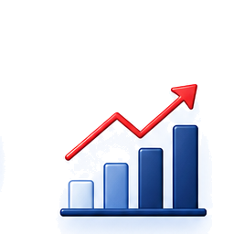
見た目は整っていても、
導線や訴求が弱く
成果が出ていない。
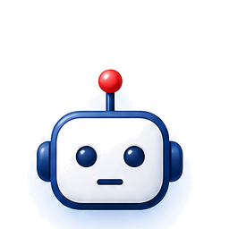
便利そうだと分かっていても、
自社業務への落とし込み方が
分からない。
SERVICE
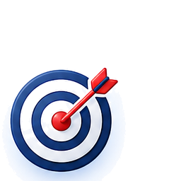
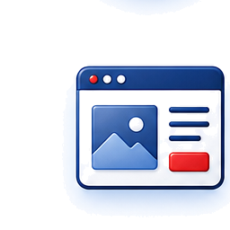
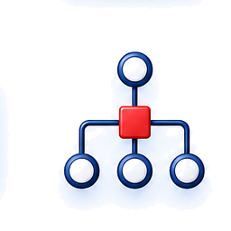
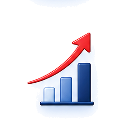
WORKS
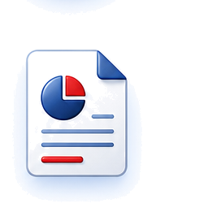
制作・改善実績
30社以上継続支援率
92%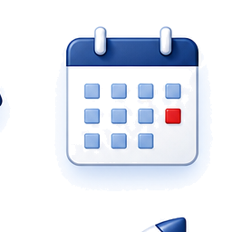
最短提案
7日FLOW
課題や目的を丁寧にヒアリングし、最適な方向性を整理します。
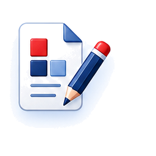
戦略・構成・スケジュールを明確にし、成果につながる設計をご提案。
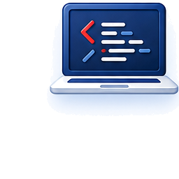
デザインから実装まで一貫して進行し、品質高く仕上げます。
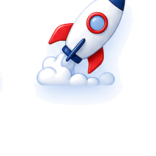
公開後の分析と改善を重ね、継続的な成果向上を支援します。
FAQ
可能です。現状整理や方向性のご相談から対応しています。
はい。既存業務の効率化や自動化設計のみでもご相談いただけます。
更新、分析、改善提案まで継続的にサポートできます。
内容により異なりますが、初回相談時に目安スケジュールをご提案します。